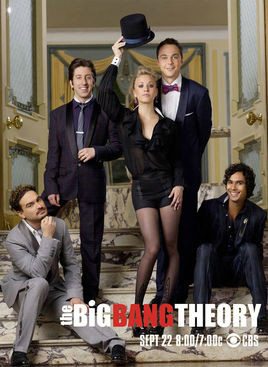

如果你从来没有学过任何英语¶
2016-07-09
最近因为某些喜感的规定的原因很多人开始疯狂对一些程序去掉所有英文进行PS,我们的现代生活到底为什么完全离不开英文？难道就只是因为英文全球都在用么，我觉得原因至少有以下几点
1.在一些事情上不容易歧义
如果有人学过日语应该知道日语是不存在“日化”外来词的，日语中会大量使用英文词。中文中大量音译或者意译外来词，比如Android音译成安卓，Train意译成火车。
日常生活中这么用问题不大，但是一旦你学习了一些科学知识或者文学，你会发现很多单词难以被简单的转换为中文，会失去原有的很多意思，这点在翻译电影&美剧标题时尤为明显。
举个栗子
The Big Bang Theory，按原意应翻译为大爆炸理论（物理学上指宇宙是由一个致密炽热的奇点于137亿年前一次大爆炸后膨胀形成的。）暗含主人公的物理学家身份，外加起了个这么个名字却在讲恋爱喜剧很有喜感。
Breaking Bad，中文翻译为绝命毒师，原来的含义有一种破罐子破摔的意思，暗示主人公一点点变坏的过程，而且Br和Ba作为两种化学元素也被按元素周期表里框起来暗示主人公的化学老师身份。
还有诸如Minecraft等等翻译了都丢掉了原来意思的就不列举了。
那肯定有人说老子不看外国剧不就完了，那你多少总得用外国产品吧
微软视窗操作系统？
然后你要修电脑，打开以后产品参数里面用的是是那么语言？
在这个全球化的时代你如果想用完全国产完全中文就只能回原始丛林了。
2.方便
英文的缩写是个伟大的东西，节省了我们浪费在没用的东西上的时间，在科学和数学上尤其广泛，你能想象一个不用任何英文&希腊字母的数学公式么。
在计算机上，最早的计算机只能显示英文，不光是因为是外国人发明的也因为英文只有26个字母，最好表示，而中文...WTF，就连你日常对话都难免会用到这种思想，比如骂别人是个傻逼所以你就用SB来代替，而汉语拼音正是借用了英文的产物。
在广受争议的HP,MP,LV等翻译问题上更是，而且简写不光方便好用还能玩梗，玩过Undertale的人应该知道Lv有什么梗。我们需要一些符号来简化事情，英文是最好的办法之一。想想看你用PC和个人电脑这两种说法哪个方便点。
3.现代化
现代化步伐没了英文寸步难行，不光是和世界其他地方的人沟通需要一种通用语言，而且在这之上也有很多问题。
学计算机的朋友一定知道如果英文差学起来是多么蛋疼的一件事，且不说你看各种先进资料需要越过一道坎，其次你会对各种术语摸不着头脑只能死记硬背。
其他行业呢，也是如此，想要变得更强，你必须得学会英文，如果还想进一步，那你需要精通英文。
4.多一种思维模式
这个很难表达，当你会用两种或以上的语言时你会发现用其他语言和你的母语的思考回路往往不同，反过来甚至能影响使用的民族的性格，这不是危言耸听。
我知道所谓某部门是不可能杜绝英文出现在手机游戏里的，但是什么是装饰性英文，怎么定义，科科／
还有由衷的为一些自干五的英文无用论感到可怜。